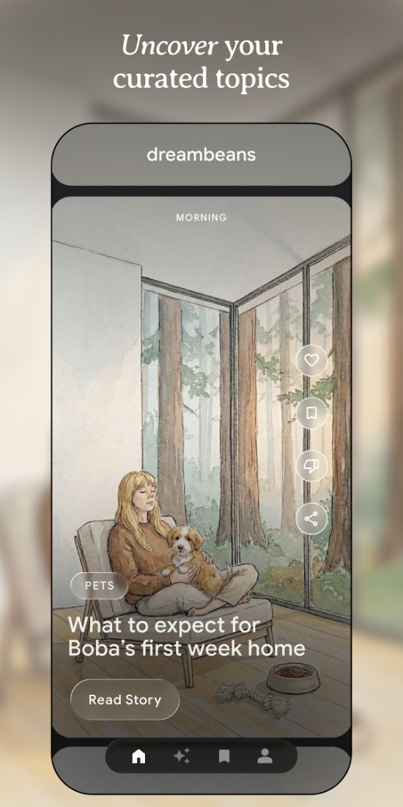
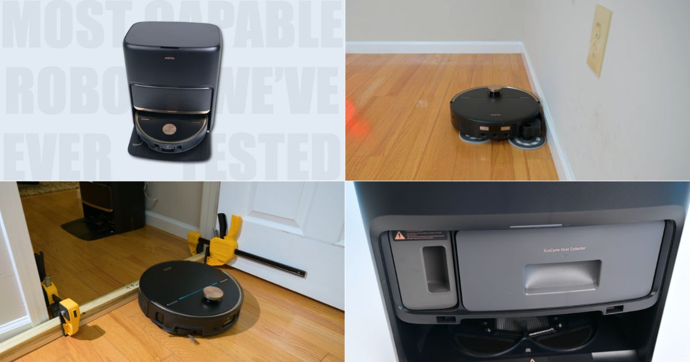
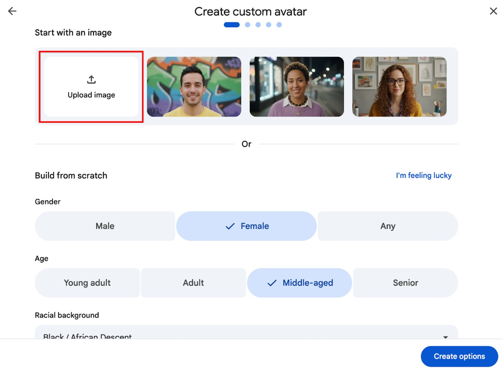
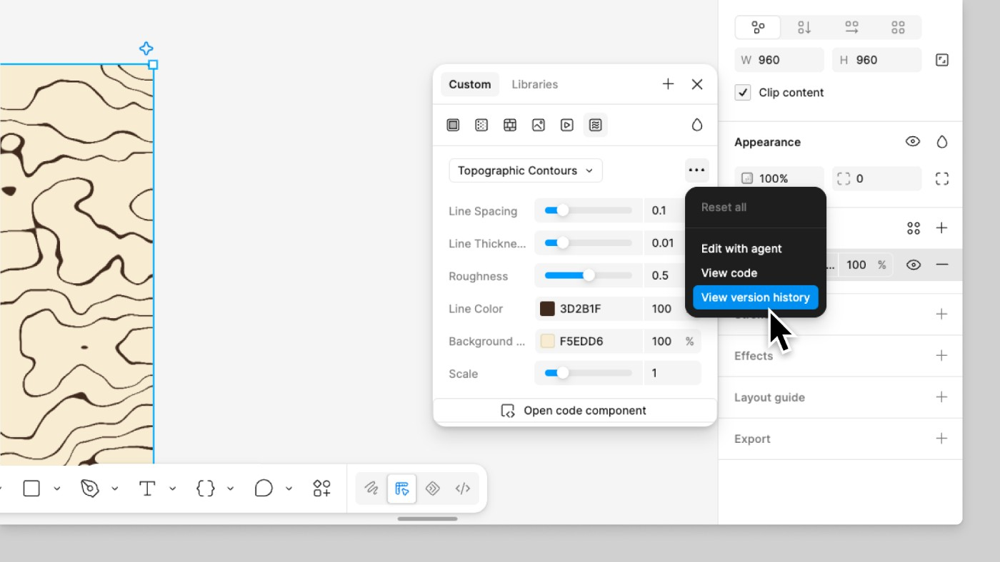
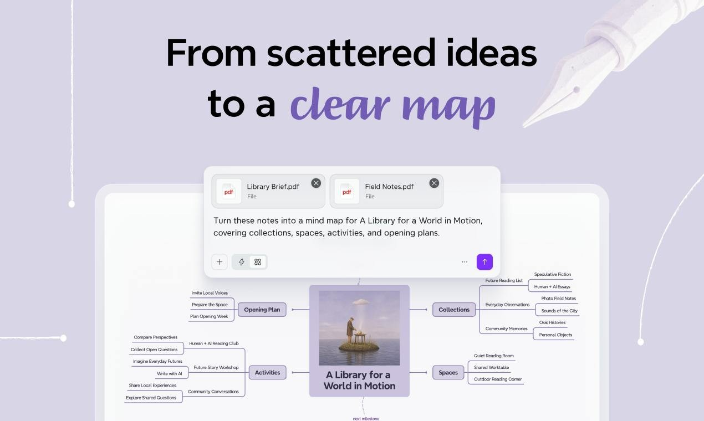
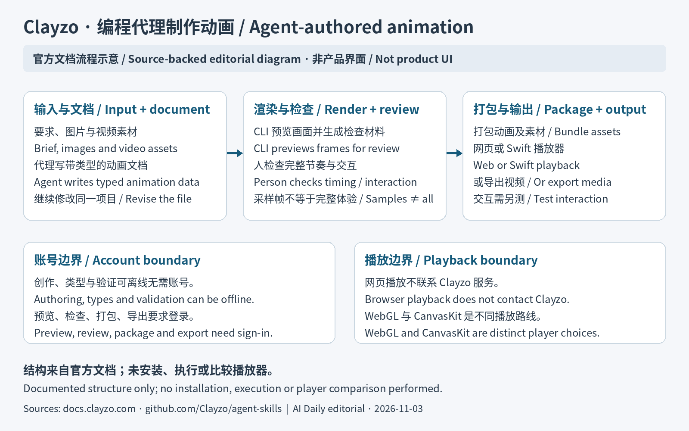
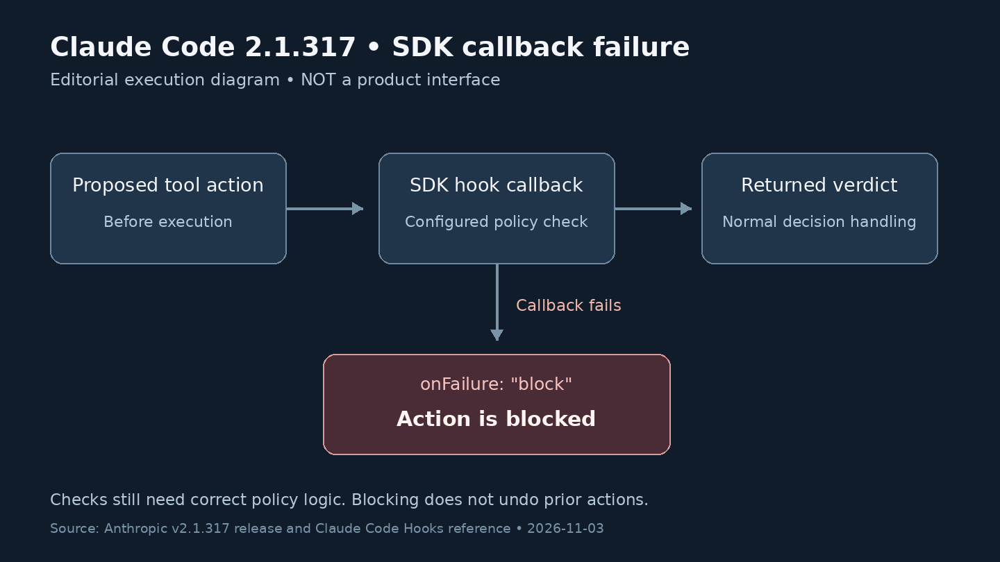
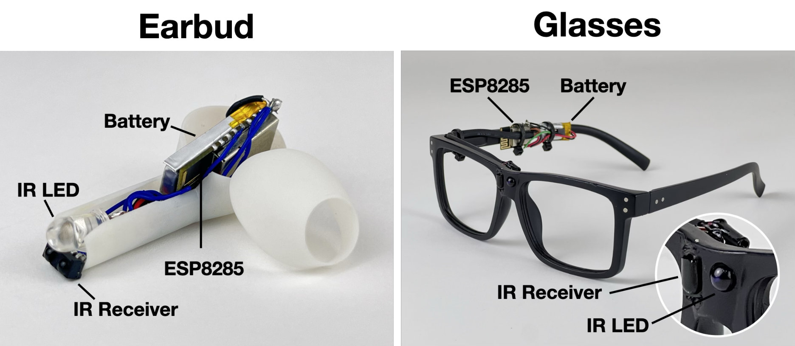
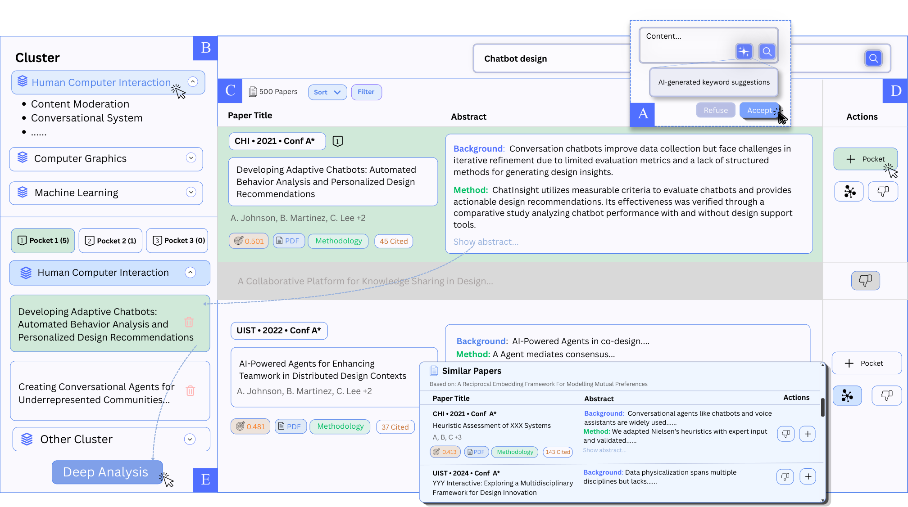

AI PRODUCT DAILY / 2026-11-03
合影、动效与腕上记录
两张肖像怎样合成一张新照片，广告图层怎样接着改，腕带录音又怎样交给手机整理。今天也看本地显卡排队、可恢复训练和新的界面研究。
2026年11月3日 · 早间刊
进入今日方向与目录 → Tancky公开工具页的实际双人上传、提示词与积分按钮；右侧为厂商生成示例，未登录实测。 ↗ 原始图证
Tancky公开工具页的实际双人上传、提示词与积分按钮；右侧为厂商生成示例，未登录实测。 ↗ 原始图证AI PRODUCT DAILY / 2026-11-03截止 04:02:43 Toronto / 09:02:43 UTC
从输入到可修改的结果
AI PRODUCT DAILY / 2026-11-03软件更新 · 官方日志 · 2026-11-02 · 近三日 / 边界见深读
Tancky用两张独照生成合影，人物输入分开但细节仍会重画
Tancky公开工具页的实际双人上传、提示词与积分按钮；右侧为厂商生成示例，未登录实测。 ↗ 原始图证Tancky新增双人合影入口：分别上传两人的照片，选朋友、兄妹等场景或填写要求，再生成共同画面。
A/B输入槽及@引用帮助指定谁穿什么，结果可与原照比较后下载。
官方日志标11月2日，同时改进示例提示和登录后保留已填素材，具体时区未披露。
每张消耗三积分，重新生成需考虑成本；输出是新场景，不是修复真实合影。
产品判断
适合纪念卡与创意表达，但痣、牙齿、身高等可能变化。照片上传云端处理，分享前需得到人物同意，并明确是合成画面；本次未独立测试肖像保真度。当前没有新硬件要求，也没有披露底层模型版本和识别成功率。
AI PRODUCT DAILY / 2026-11-03软件更新 · 官方资料 / Product Hunt · 2026-11-02 · 近三日 / 边界见深读
Hera把广告草稿保留成图层，改标题不必重新生成整张
 Hera官方展示的多代理创意画布，带宣传外框；非本刊实测。 ↗ 原始图证
Hera官方展示的多代理创意画布，带宣传外框；非本刊实测。 ↗ 原始图证Hera面向制作广告和社交素材的创作者，输入品牌资料、参考图与要求，在同一画布比较多个代理生成的版本。
选定方向后，可直接修改文字、字体、颜色和位置，再把设计做成动画。
11月2日PH展示的是新创意画布，不是Hera首次上线；确切开放时刻未核。
静态图层可手改，动画的手动控制仍有限；直接编辑不扣积分是创办人的说明。
产品判断
适合反复修改同一广告，不宜把多个版本等同效果更好。订阅精确价格未确认，品牌一致性和导出结果仍需逐项检查。不同客户可分开建画布，但输入参考素材前仍需确认授权和使用范围。
AI PRODUCT DAILY / 2026-11-03消费软件 · 官方区域开放 · 2026-11-03 · 窗口内观察
Dreambeans在印度开放，把已连接的个人资料编成每日故事卡

Google Play上的Dreambeans故事阅读界面，包含保存、反馈和分享入口；开发者截图，非本刊登录实测。 ↗ 原始图证Dreambeans面向愿意连接个人Google资料的用户。选择日历、邮件、照片等来源后，系统主动生成有限的一组每日故事，不必逐条写提示。
点开卡片可进一步阅读、收藏或分享；反馈入口可说明不相关和事实错误，但修改用于以后推送，不立即重写当前卡片。
11月3日官方宣布向印度十八岁以上用户开放Android与iOS版本，支持英语及十三种当地语言。
至少连接一项服务，首次生成可能需要一天。资料权限应按来源选择，不能把“个人故事”理解成本地处理。
产品判断
适合比较是否发现了原本会错过的活动，以及建议能否实际使用，而不是只看插画是否讨喜。
AI PRODUCT DAILY / 2026-11-03消费硬件 · 厂商资料与发布报道 · 2026-11-02 · 近三日 / 边界见深读
Qore Vox双击手环录音，回手机整理文字，不再多带一枚录音器
Pebble官方Qore Vox产品图；非本刊实物试用。 ↗ 原始图证印度Pebble的Qore Vox把麦克风加进无屏健康手环，会议或灵感出现时双击侧键录音，单击结束。
手环可暂存一百分钟，连接手机后在Vox应用查看文字与摘要；蓝灯提示周围人正在录音。
十一月二日发布报道早于本期主窗口，列近三日补充。它省掉解锁手机找录音应用，但无屏也把检查内容留到手机端。
官网称无需订阅，存储声明不等于已证明所有推理离线。商品页5799卢比，专题页6999卢比，实际结账需核。
产品判断
先试袖口遮挡、多人距离和中英混说，再核摘要是否漏掉数字与否定。健康光学传感另供日常趋势，不把录音清晰或恢复分数当作已验证效果。
AI PRODUCT DAILY / 2026-11-03硬件实测 · 独立媒体新评测 · 2026-11-02 · 近三日 / 边界见深读
MOVA伸长拖布去够椅腿，避障出色仍要检查出水和清扫时间

Vacuum Wars所测MOVA V70 Ultra Complete及基站。 ↗ 原始图证MOVA V70 Ultra Complete面向家具缝隙多、想少搬椅子清扫的家庭，先在应用中选房间、水量和清扫任务。
摄像头识别障碍，导航决定路线，伸缩拖布绕到椅腿与边缘；完成后回站洗拖布和集尘。
11月2日新评测在二十四项障碍测试中通过二十三项，但出水档位表现反常，行进效率也偏低。
这是已售硬件的新实测，不是新品首发；旧评测对地毯拾取更不满意，不能只看一个综合分。
产品判断
无尘袋集尘仍需人工倒灰。试用应同时检查椅腿后残留、地面湿度及整屋完成时间，而非仅看是否避开物品。官方美国页标价1299美元，所读页面显示缺货。
AI PRODUCT DAILY / 2026-11-03可穿戴实测 · 独立媒体评测 · 2026-11-02 · 近三日 / 边界见深读
Pixel Watch 5离线能执行小指令，跑步路线修正却要等同步之后
 Wareable评测中的Pixel Watch 5操作照片；不是本刊实测。 ↗ 原始图证
Wareable评测中的Pixel Watch 5操作照片；不是本刊实测。 ↗ 原始图证Pixel Watch 5让Android用户抬腕设置计时、开始运动，简单指令可离线处理，不必先摸出手机。
Gemini给出建议回复后可双指捏合确认；复杂问答仍需联网。十一月二日新评测关注这些日常差别。
评测者未在树木覆盖路线看到明显定位优势，且云端修正发生在运动后，不能改善当时看到的配速。
这是旧硬件的新使用观察，不是十一月首发，也没有新GPS传感器。离线助手与云端轨迹处理须分开理解。
产品判断
先核常用指令、账户地区和语言，再比较跑完后的地图与跑步中显示；现有表已够用的人，不宜只为更漂亮的轨迹换代。高级健康服务另有订阅，本文不作诊断能力判断。
AI PRODUCT DAILY / 2026-11-03XR硬件 · 日本渠道与适配公告 · 2026-11-02 · 近三日 / 边界见深读
AURA补齐日本购买与试戴路径，先选瞳距再考虑空间工作台
 DOCOMO公告中的XREAL AURA产品图；不是新一代硬件或本刊试戴。 ↗ 原始图证
DOCOMO公告中的XREAL AURA产品图；不是新一代硬件或本刊试戴。 ↗ 原始图证XREAL AURA把Android应用投到透明镜片中，用手势、语音或外接计算包的触控板操作，适合想随身展开多窗口的人。
十一月二日DOCOMO补充日本渠道：十一月二十七日网店发售，实体店十二月起，不是另一代硬件首发。
提供两种内存容量和M/L两档瞳距；镜体不足九十五克不包含有线计算包。
Gemini可理解视野协助操作，但功能随地区、语言和订阅变化，日本售价及实际试戴安排尚未核定。
产品判断
能否看清窗口边缘、戴久是否舒适，以及线材如何放置，都比只看视野角数字更接近购买决定。已有海外订购报道不能代替本地交付与支持条件。
AI PRODUCT DAILY / 2026-11-03软件更新 · 官方公告与帮助文档 · 2026-10-30 · 本周回看
Google Vids用一张照片定人物外观，脚本修改后仍要重新生成

Google官方自定义头像界面，展示图片上传入口；非本刊生成测试。 ↗ 原始图证Google Vids让培训和说明视频作者上传人物图片，先确定讲解者外观，再录入脚本生成片段。
图片可从电脑、Drive或Photos选择；在Vids中调整背景与光线，选声音、命名并保存到当前项目。
Rapid Release于10月30日开始渐进开放，11月2日才公告；不是所有账户当天同步可见。
改脚本会标记头像过期，需要逐场景更新；上传照片不等于复制照片中人物的声音。
产品判断
适合固定人物反复讲解，但每段仍需检查口型、读音和画面。项目间复用要复制项目；个人账户的自定义权限在公告与帮助表中不一致，使用前应核对实际入口。
AI PRODUCT DAILY / 2026-11-03软件更新 · 官方发行与操作文档 · 2026-11-02 · 近三日 / 边界见深读
Figma让生成的着色器进入可运行原型，导出上限提高到4096像素

Figma着色器设置与版本历史入口，官方操作文档截图。 ↗ 原始图证设计师描述玻璃扭曲、火焰或纹理及所需控件，让Figma代理生成可调节的着色器，再应用到图层。
11月2日更新提高渲染与导出上限至4096像素，并允许随设计转成代码图层，按Play观察效果。
着色器已向所有用户普遍开放，但代码图层支持仍有浏览器条件。
发行说明要求Chrome157并分批推出；帮助页还要求HTML-in-Canvas设置，桌面应用不支持该路径。
产品判断
生成和修改消耗AI额度，应用与播放不消耗。应在真实布局里检查文字可读性、悬停状态和运行表现；更高分辨率不等于更流畅，也不能把独立动画预览当成整个交互已验证。交付前还需检查目标浏览器。
AI PRODUCT DAILY / 2026-11-03软件更新 · 官方日志 · 一周回看 · 2026-10-28 · 本周回看
Xmind桌面版可引用分支和附件改图，外部代理只连接指定工作区

Xmind官方展示中的文件输入与思维导图界面，带宣传外框；非本刊实测。 ↗ 原始图证Xmind适合整理研究、计划和复杂选项的人：引用现有主题、补充附件，用对话展开或调整脑图。
图上的链接可显示预览或嵌入内容，用户继续手动检查层级和关系。
桌面版27.01.05086实际更新在10月28日；11月2日PH亮相不重置发布日期。
外部MCP代理需要授权，当前文档限定访问My Works；本地文件技能是另一条路线。
产品判断
选中主题能减少重复解释，却不保证推理和任务拆分正确。先在副本测试改一个分支，确认其他结构未被误改；在线协作、版本历史和AI额度随计划不同，不能从免费注册推断无限使用。旧版网页已有类似聊天，本次按桌面更新回看，不把推广日期当首发。
AI PRODUCT DAILY / 2026-11-03软件集成更新 · 官方日志 · 2026-11-02 · 近三日 / 边界见深读
Finetuning把配乐生成接进助手，先报成本再返回可试听结果
 AI Daily依据Finetuning官方MCP及许可文档绘制的流程示意，非产品界面，未实测。 ↗ 原始图证
AI Daily依据Finetuning官方MCP及许可文档绘制的流程示意，非产品界面，未实测。 ↗ 原始图证Finetuning新增MCP入口，让制作视频或播客的人在现有助手里描述曲风、情绪和配器。
授权后代理可以生成歌曲、纯音乐或音效，等待完成，再整理曲库和获取生成证明。
11月2日更新同时把API开放到Plus；不是新音乐模型发布。
付费创建先显示成本并遵守上限；上传、改编和去人声不开放给MCP，权利确认仍由人处理。
产品判断
代理能删除曲目且删除不可逆，整理前须确认具体记录。商用许可不代表排他版权，生成证明也不等于作品独创性判定；仍需试听和核对最终用途。它需要有效付费计划，不能把免费音乐试听当作代理接口免费开放。
AI PRODUCT DAILY / 2026-11-03开发者动画引擎 / SDK · 官方文档 · 2026-11-02 · 近三日 / 边界见深读
Clayzo让编程代理写可复用动画，再检查画面和导出

AI Daily依据Clayzo官方文档绘制的动画创作与交付示意；非产品界面，未运行测试。 ↗ 原始图证Clayzo面向做发布视频和网页动效的创作者，让现有编程代理把要求写成动画代码。
通过命令行预览、检查画面，再导出视频或打包给网页播放器；同一文档可继续修改。
11月2日PH展示动画引擎，与三月原型协作产品不同，精确首发时间未核。
作者称工具免费，但预览和导出需要登录；所用代理的费用另算。
产品判断
逐帧检查能帮助找遮挡，却不能保证节奏和交互正确。先比较网页播放与最终视频，特别检查字体、透明背景及悬停状态，不把格式导出成功当作品已可交付。它沿用现有代理，不需要新硬件；实际播放体验也取决于素材和所选渲染器。
AI PRODUCT DAILY / 2026-11-03软件功能 · 官方文档与社区 · 2026-10-29 · 本周回看
TRAE 宝分开管理跨项目背景与当前任务，并行开发仍要看清改动范围
 TRAE官方任务助理对话界面，非本刊实测。 ↗ 原始图证
TRAE官方任务助理对话界面，非本刊实测。 ↗ 原始图证TRAE宝面向同时维护多个项目的开发者。输入需求后，全局助理整理历史对话和产物，项目助理围绕当前仓库拆分任务。
子任务可并行推进，再按依赖联调，并集中返回待判断事项与结果，减少来回补背景、追进度的操作。
10月29日已上线；11月2日官方另公布至11月8日的限时免积分活动，不能写成永久免费。
活动需登录最新版桌面端，不支持视频生成。部分回帖反映提示被擅改和连接失败，尚未独立复现。
产品判断
适合先交一项边界清楚的小型修复，检查完整计划、实际差异与失败分支，再决定是否同时交付更多任务。
AI PRODUCT DAILY / 2026-11-03模型与API · 官方技术发布 · 2026-11-01 · 近三日 / 边界见深读
LongCat 2.5接收图像和视频，再由现有编程工具完成长任务
 美团LongCat2.5技术发布中的原生分辨率视觉离散化示意，非产品界面或实测成绩。 ↗ 原始图证
美团LongCat2.5技术发布中的原生分辨率视觉离散化示意，非产品界面或实测成绩。 ↗ 原始图证LongCat2.5面向需要读截图、分析视频并继续执行任务的开发者。输入文字与视觉材料，可通过兼容API接入已有代理工具。
官方OpenCode文档给出认证、选模型和连续对话入口，思考模式可开关；输出仍由工具宿主执行和展示。
11月1日英文技术发布介绍原生视觉离散编码与长轨迹训练，11月2日中文文章不另算首发。
图片可直接编码或提供公开链接，视频只能传链接。价格分缓存输入、未缓存输入和输出，限时折扣不是长期承诺。
产品判断
接入后先核对图中细节有没有正确进入最终文件；厂商演示与榜单不能证明复杂任务不再需要人工检查。
AI PRODUCT DAILY / 2026-11-03开源开发更新 · 原始代码与社区请求 · 2026-11-02T15:13:29Z · 窗口内观察
Berth让本地AI任务错峰占用显卡，夜间队列知道何时该让位
 Berth作者提供的Harbor界面，使用内置演示数据；不是本次实测。 ↗ 原始图证
Berth作者提供的Harbor界面，使用内置演示数据；不是本次实测。 ↗ 原始图证一张显卡同时跑聊天、ComfyUI和游戏，容易因模型仍占显存而失败。Berth用租约安排谁先使用，并显示等待原因。
任务结束后卸载，确认显存释放再交给下一项；Harbor页面可查看占用与队列。
11月2日合入开发分支的时段规则，可让批任务等到夜间启动，时段结束后在任务边界交还显卡。
这不是稳定版已上线承诺；受保护租约不能叠加自动截止。
产品判断
适合愿意配置本地引擎的人；不增加显存容量，未管理进程只报告，不擅自终止。可先验证两个短任务的排队与恢复，再接入常用工作站；社区请求只有个别可见样本，尚无普遍省电效果证据。
AI PRODUCT DAILY / 2026-11-03开发工具更新 · 官方发行记录 · 2026-11-03T01:25:46Z · 窗口内观察
Claude Code让失败的SDK检查拦住动作，也补上权限提示

依据官方发行记录绘制的SDK执行逻辑示意，非产品界面；已配置onFailure:block。 ↗ 原始图证把Claude Code接入内部工具的开发者，可以在动作执行前运行自定义检查。
2.1.317为SDK回调增加onFailure:block；检查本身出错时停止动作，不把无结果误当许可。
新建云端定时任务若带上未请求的连接器，会提示如何移除；外发账户邮箱前也会询问。
这是SDK回调的新支持，命令和HTTP钩子的同类选项已有较早版本；不是所有检查默认阻断。
产品判断
接入后先让检查故意报错，核对目标系统确实没有写入，再检查恢复与重试。提示应说明哪项检查失败、哪一步尚未执行，不能只显示笼统失败。这种区分尤其影响需要批准写入的集成，不能把检查报错显示成用户拒绝。
AI PRODUCT DAILY / 2026-11-03开源工具更新 · 官方发行与合并记录 · 2026-11-01T21:11:30Z · 近三日 / 边界见深读
Beacon保留代理记忆，也把用量记录送回原有平台
 编辑根据v1.3.52发行说明与PR #1156绘制的遥测转发示意，非产品界面或实测结果。 ↗ 原始图证
编辑根据v1.3.52发行说明与PR #1156绘制的遥测转发示意，非产品界面或实测结果。 ↗ 原始图证Beacon为同时使用多个编程代理的开发者保留会话、工具调用和修正，提炼后可复用为知识或技能。
1.3.52新增第二个OTLP后端转发，让接入本地采集器后，原来的成本或追踪平台继续收到记录。
转发可筛选Claude Code与Codex，经过脱敏并限制队列；这是11月1日更新，非11月2日首次推出记忆。
本地保留与云端发送是两项设置；交互安装预选云端，用户可选择本地。升级和修复也要复查目的地。
产品判断
升级后核对两端同一次调用、用量字段和脱敏结果，尤其确认断网不会拖住本地记录。不要把捕获完整历史理解为自动学会正确经验，规则过时仍需复核。
AI PRODUCT DAILY / 2026-11-03开源技能更新 · 官方版本说明 · 2026-11-02T18:11:11Z · 窗口内观察
Video Studio Skill修复新项目合成，把真实操作录像接到成片流程
 编辑依据项目文档绘制的工作流示意；不是产品界面或本次运行截图。 ↗ 原始图证
编辑依据项目文档绘制的工作流示意；不是产品界面或本次运行截图。 ↗ 原始图证要给新功能做演示的开发者，可把产品地址、观众、讲解重点和品牌材料交给Claude Code技能。
它规划镜头，用Playwright录真实浏览器，再经HyperFrames编排与FFmpeg输出视频、缩略图和检查帧。
11月2日1.0.1修复已有录屏目录导致初始化失败及无旁白示例缺音轨的问题。
简短示范只证明规划阶段，较长示范里的终端画面包含编排重现。
产品判断
仍需本地运行环境、模型额度和人工审片；未验证完整新手路径或全部平台。先选无需登录的短演示，检查关键点击、字幕和声音；生成器负责拼装，产品负责人仍须核对画面中的功能承诺，避免把编排重现当成现场执行。
AI PRODUCT DAILY / 2026-11-03开源运维工具 · 官方技术介绍 · 2026-11-02 · 近三日 / 边界见深读
NVIDIA Recovery先给出重启建议，再按策略恢复训练
 NVIDIA官方恢复流程示意，非本次集群实测。 ↗ 原始图证
NVIDIA官方恢复流程示意，非本次集群实测。 ↗ 原始图证训练集群运维人员把日志、GPU指标和调度状态接入Recovery，识别崩溃、停滞或慢任务。
系统记录恢复建议，按策略排除故障节点并重启；训练脚本仍须自己读取检查点。
11月2日技术介绍展示与Attribution归因联动，新部署默认只观察，不立即改调度。
当前支持Slurm及Slinky，原生Kubernetes恢复未实现；公开仓库仍标实验性。
产品判断
Attribution源代码在Recovery文档中仍标未公开可取，不能把整套依赖说成开箱可用。先检查建议是否找对故障节点，再核对恢复后的有效训练进度，而非只看重启成功。公开代码适合先做隔离试验；费用节省和长期稳定性尚无本次独立验证。
AI PRODUCT DAILY / 2026-11-03芯片研究 · 联合技术公告 · 2026-11-02 · 近三日 / 边界见深读
AISIN把启动数据留在芯片内，省掉视觉设备醒来时的搬运等待
 东北大学与AISIN联合发布的芯片实照、指标表和演示系统图；研究原型，不是上市产品。 ↗ 原始图证
东北大学与AISIN联合发布的芯片实照、指标表和演示系统图；研究原型，不是上市产品。 ↗ 原始图证AISIN与东北大学的研究芯片面向需要快速唤醒的相机、机器人和边缘设备，把启动资料与模型权重存入不挥发片上内存。
电源开启后减少外部存储搬运，再执行Tiny YOLOv3物体检测；不是新增相机传感器，也不是聊天大模型。
十一月二日公告报告65.7毫秒内核启动，检测另有处理时间；不能把该数字当完整系统响应。
混合精度减小权重，也有检测精度下降。结果来自作者测试，量产供货、价格与客户设备效果均未确认。
产品判断
它值得看的是间歇工作设备能否少待机、醒得快；采用前须把传感器启动、第一帧和错误重试一起计入功耗与等待。
AI PRODUCT DAILY / 2026-11-03研究报告 · 公开实验日志 · 2026-11-02 · 近三日 / 边界见深读
权重编程让代理直接修模型参数，Qwen的收益主要来自减少思考循环
 AI Daily据作者实验8与公开日志绘制的实验流程示意；不是产品界面，数值为作者报告，本刊未独立复现。 ↗ 原始图证
AI Daily据作者实验8与公开日志绘制的实验流程示意；不是产品界面，数值为作者报告，本刊未独立复现。 ↗ 原始图证这项研究让开发者向Astra描述目标，把模型权重与受限Python环境交给它分析，直接生成参数修改。
Qwen实验允许有限次前向测试，不允许梯度下降或训练；修改后再运行独立于练习题的评测。
作者报告思考循环减少、数学得分上升，但仍有答案撞上长度上限。
较少循环的Gemma没有得到明确提升；这不是给任意模型增加新能力的通用工具。
产品判断
公开日志可帮助检查改动，但不能替代复跑和回归测试。团队应比较固定任务的完成率、非目标能力与总实验成本，再决定是否采用权重补丁；本次未运行模型，也未确认完整部署成本。
AI PRODUCT DAILY / 2026-11-03论文 · 研究原型 · 2026-11-01T11:09:16Z · 近三日 / 边界见深读
MaterialVellum让手指拉动生成约束，界面里的材料各有不同作用
 MaterialVellum作者提供的研究原型图；不是商业产品实测。 ↗ 原始图证
MaterialVellum作者提供的研究原型图；不是商业产品实测。 ↗ 原始图证MaterialVellum面向城市草图与海报设计，把边界、密度和功能要求做成可触摸的弹性带、黏土、磁铁与沙粒。
用户拉边界、堆高密度、放功能标记，再生成或局部重绘；无需把每次空间修改重新写成长提示。
原型结合多点触控、物理模拟及扩散模型，没有使用新的实体材料或传感器。
十人定性研究讨论操作体验，没有证明设计质量或完成速度优于现有软件。
产品判断
模板、后处理和模型条件控制的可靠程度不同。精确尺寸仍需数值核对，拖动一块区域后也要检查其他区域是否被意外改变。可先试一张熟悉的海报，比较手势修改与常规图层操作需要多少返工。
AI PRODUCT DAILY / 2026-11-03论文 · 研究原型 · 2026-11-02T06:24:37Z · 近三日 / 边界见深读
GazeTags用红外识别头部朝向的物体，房间需要先贴标签

GazeTags作者提供的研究原型图；不是商业产品实测。 ↗ 原始图证GazeTags给眼镜或耳机加红外收发器，向头部正对的物体标签询问身份，可同时取回温度等传感数据。
使用者转头对准对象，低功耗标签响应，再由设备显示信息或发出控制请求。
它读的是头部方向，不追踪眼球，也不能识别尚未贴标签的任意物体。
原型以工程实验验证通信，室外与长期使用未验证；遮挡和同时响应的标签数量会影响结果。
产品判断
无需摄像头可以减少图像采集，但不代表完整隐私保护；原型固定身份码可被重放，控制真实设备前还需要完善认证。适合先在少量固定物品上试用，分别检查通信、目标选择和最终动作是否成功。
AI PRODUCT DAILY / 2026-11-03论文 · 研究原型 · 2026-10-31T09:18:06Z · 近三日 / 边界见深读
HiPaper先让研究者挑定论文，再围绕这个集合追问

HiPaper作者提供的研究原型图；不是商业产品实测。 ↗ 原始图证HiPaper把检索、论文分组和追问接在一起，面向需要筛选相关工作的研究者。
输入主题后检查关键词与聚类，把选中的论文放进知识袋，再以这个集合生成比较或关系说明。
中间结果可以编辑和复用，引用能回看片段；研究原型的资料主要限于论文摘要。
十四名博士生的短期研究没有对照工具，也未评估最后综述的质量。
产品判断
它可用于初筛，不能代替阅读全文；跨论文关系是模型推断，缺少细节或反例时还需要回到原文核验。试用时可加入一篇反例论文，再移除它检查答案是否同步改变；保存集合不等于完成综述。
AI PRODUCT DAILY / 2026-11-03论文 · 研究原型 · 2026-11-01T13:34:04Z · 近三日 / 边界见深读
Interface Quilt给旧软件加新控件，动作仍要回到原界面执行
 Interface Quilt作者提供的研究原型图；不是商业产品实测。 ↗ 原始图证
Interface Quilt作者提供的研究原型图；不是商业产品实测。 ↗ 原始图证Interface Quilt面向想调整现有桌面软件操作方式的人，用生成界面做覆盖层，再让电脑操作代理连接原应用。
用户提出修改需求，代理观察屏幕、生成补丁；点新控件后，系统在原窗口完成动作并更新状态。
示例包括工具菜单与跨应用图片编辑，不要求应用源码、API或无障碍数据。
生成和调试可能耗时数十分钟，部分操作还需借用真实鼠标；这不是即时、无干扰的普适插件。
产品判断
论文展示可行性，没有用户效率对照。隐藏状态、识别错误和同步延迟都可能让覆盖层与原软件不一致。先从一个可撤回的小动作测试，并把首次设置及日后维护时间计入收益。